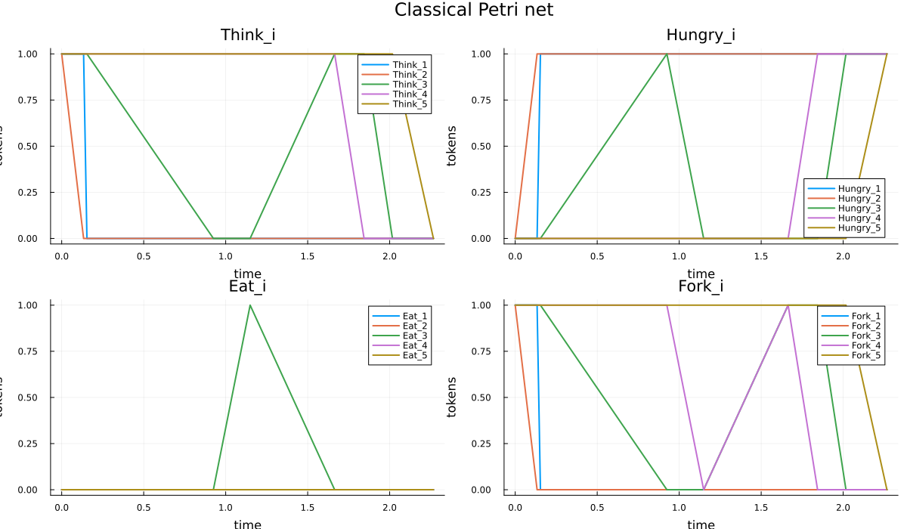
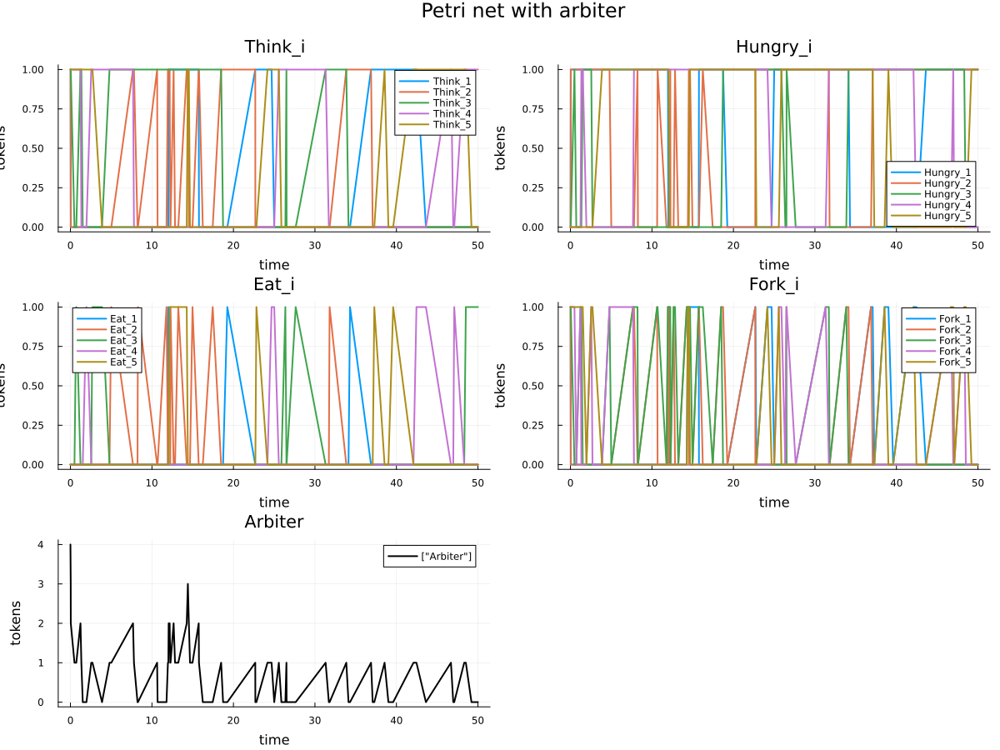
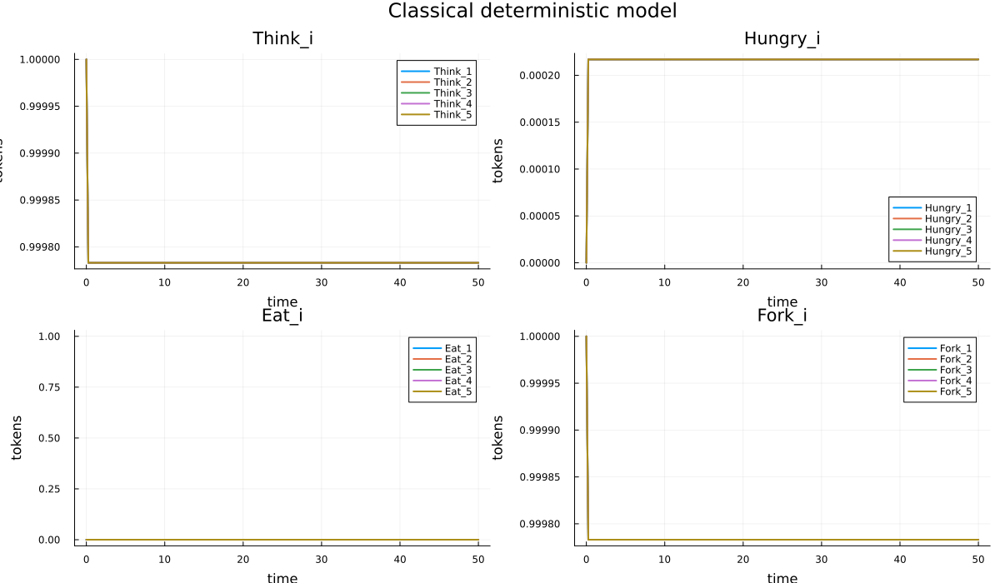
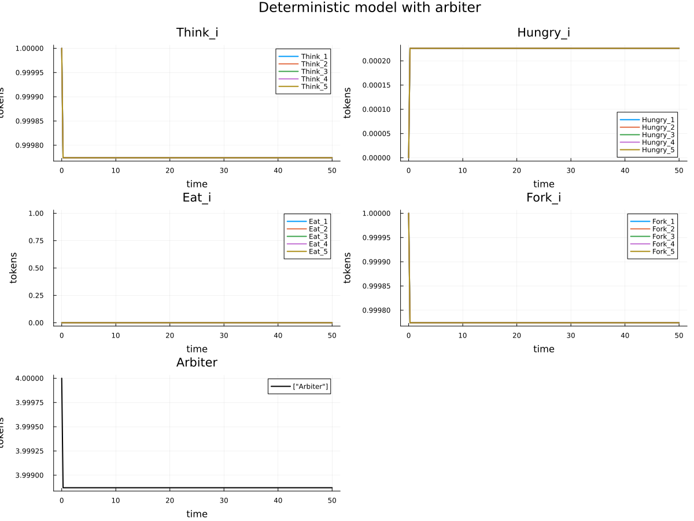
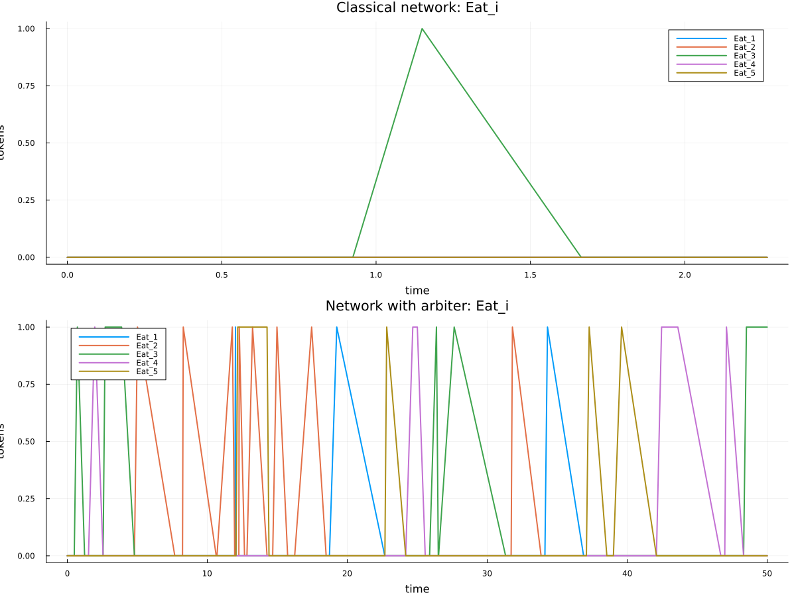
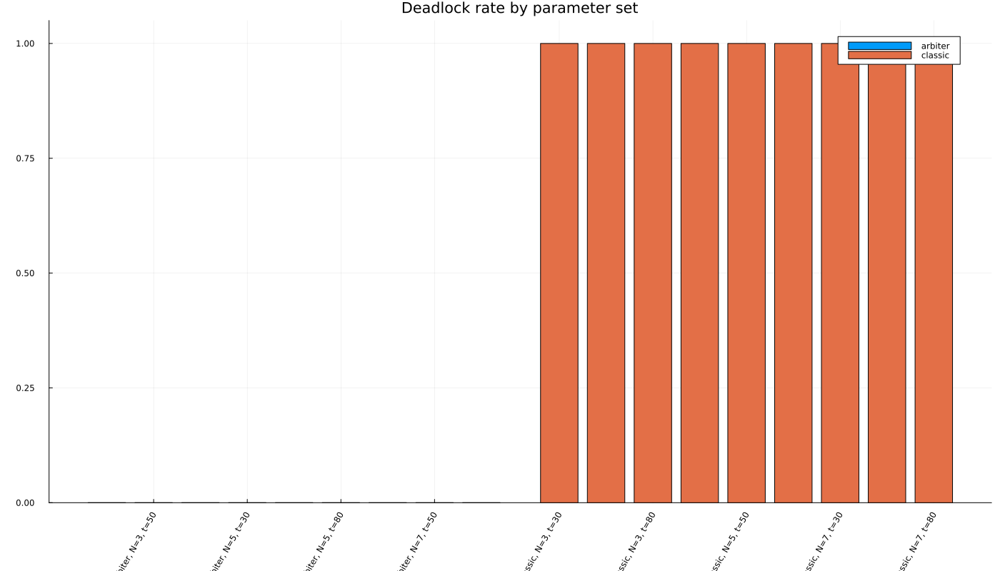

Лабораторная работа №5. Аппарат сетей Петри
2026-04-18
Изучить аппарат сетей Петри на примере задачи обедающих философов, реализовать классическую и модифицированную модель с арбитром, выполнить стохастическое и детерминированное моделирование, получить графики, таблицы результатов и производные literate-артефакты.
N,
tmax и seed.clean,
md, ipynb, qmd.Сеть Петри представляет собой двудольный ориентированный граф, состоящий из позиций, переходов, дуг и маркировки (Peterson 1981 г.). Позиции описывают состояния системы, переходы моделируют события, а маркировка задаёт текущее распределение фишек по позициям. Такой аппарат особенно удобен для описания параллелизма, синхронизации и конкуренции за ресурсы.
В данной работе сеть Петри используется для моделирования совместного доступа нескольких процессов к ограниченному набору ресурсов. Стохастическая часть моделирования опирается на идею выбора следующего события по интенсивностям переходов (Gillespie 1977 г.).
В классической постановке за круглым столом находятся N
философов и N вилок (Dijkstra 1965 г.). Каждый философ
переходит между состояниями Think, Hungry и
Eat. Чтобы перейти к приёму пищи, философ должен захватить
две соседние вилки. Если все философы одновременно берут по одной вилке,
возникает взаимная блокировка: система замирает, и ни один философ не
может завершить захват ресурсов.
Для устранения deadlock в работе используется
модификация с арбитром: вводится дополнительная позиция
Arbiter с N-1 фишками. Это ограничивает число
философов, которые одновременно пытаются захватить ресурсы, и
предотвращает тупиковую конфигурацию.
В работе использовались:
OrdinaryDiffEq.jl для численного решения
детерминированной версии модели (SciML contributors 2024
г.);Plots.jl для построения графиков и GIF-анимации;CSV.jl и DataFrames.jl для сохранения и
анализа результатов;Literate.jl для генерации clean,
md, ipynb и qmd представлений
(Ekre и contributors 2024 г.).Подход литературного программирования позволяет хранить код и поясняющий текст в одном источнике (Knuth 1984 г.). В лабораторной работе это использовано для четырёх сценариев:
Из каждого *_literate.jl-файла автоматически
сгенерированы четыре представления:
clean-скрипт;.qmd).В рабочем каталоге был создан Julia-проект с зависимостями
CSV, DataFrames, Plots,
Literate и OrdinaryDiffEq. В ходе подготовки
были созданы каталоги:
src/ для модулей и служебных функций;scripts/ для базовых и literate-сценариев;data/ для таблиц результатов;plots/ для графиков и анимации;generated/ для производных представлений
literate-скриптов;report/ и presentation/ для итоговых
документов.Основные файлы проекта:
src/DiningPhilosophers.jl — модуль модели сети
Петри;src/Paths.jl — локальные хелперы путей проекта;scripts/dining_philosophers.jl — базовый
эксперимент;scripts/dining_philosophers_animation.jl — генерация
GIF;scripts/dining_philosophers_report.jl — итоговый
сравнительный график;scripts/dining_philosophers_params.jl — параметрическое
исследование;scripts/*_literate.jl — literate-версии сценариев;scripts/generate_literate.jl — генератор
clean/md/ipynb/qmd.DiningPhilosophers.jlМодуль содержит:
PetriNet с матрицами pre,
post и incidence;deadlock;Ключевая идея модели состоит в том, что каждое действие философа
представлено переходом, а вилки и состояния философов представлены
позициями. Для классической сети это приводит к тупиковой маркировке,
когда все фишки переходят в позиции Hungry_i, а все позиции
Fork_i оказываются пустыми.
Ниже приведён фрагмент основного модуля:
function simulate_stochastic(net::PetriNet, u0::Vector{Int}, tmax::Real;
seed::Integer = 123,
rng::Union{Nothing, SimpleRNG} = nothing,
max_events::Int = 10_000)
rng === nothing && (rng = SimpleRNG(seed))
time = 0.0
marking = copy(u0)
rows = Vector{Dict{Symbol, Any}}()
push!(rows, snapshot_row(time, net.place_names, marking))
# ...
endscripts/dining_philosophers.jlБазовый сценарий запускает две сети при N = 5 и
tmax = 50.0:
Кроме стохастического прогона сценарий строит детерминированные траектории и сохраняет результаты в CSV.
Сводка базового прогона:
deadlock = true;9;5;Eat:
0.Последняя строка data/dining_classic.csv имеет вид:
time = 2.2667654750828707
Hungry_1 = Hungry_2 = Hungry_3 = Hungry_4 = Hungry_5 = 1
Eat_1 = Eat_2 = Eat_3 = Eat_4 = Eat_5 = 0
Fork_1 = Fork_2 = Fork_3 = Fork_4 = Fork_5 = 0Это и есть тупиковая конфигурация.

Для модифицированной сети получено:
deadlock = false;76;3;Eat:
1.Последняя строка data/dining_arbiter.csv соответствует
времени t = 50.0 и показывает, что хотя часть философов
остаётся голодной, сеть не теряет живость: как минимум один философ
находится в состоянии Eat, а позиция Arbiter
продолжает управлять доступом к ресурсу.

Детерминированная версия модели демонстрирует ту же тенденцию: классическая сеть быстро деградирует к состояниям ожидания, тогда как сеть с арбитром сохраняет активность на всём интервале времени.


Фрагмент dining_classic.csv:
8×21 DataFrame
Row │ Fork_3 Think_5 Eat_4 Hungry_4 Think_4 Think_2 Hungry_5 time Hungry_1 Hungry_3 Eat_3 Eat_1 Fork_1 Think_3 Hungry_2 Eat_5 Fork_5 Fork_2 Fork_4 Think_1 Eat_2
1 │ 1 1 0 0 1 1 0 0.0 0 0 0 0 1 1 0 0 1 1 1 1 0
2 │ 1 1 0 0 1 0 0 0.13339 0 0 0 0 1 1 1 0 1 0 1 1 0Фрагмент dining_arbiter.csv:
8×22 DataFrame
Row │ Fork_3 Think_5 Eat_4 Hungry_4 Think_4 Think_2 Hungry_5 time Hungry_1 Hungry_3 Eat_3 Arbiter Eat_1 Fork_1 Think_3 Hungry_2 Eat_5 Fork_5 Fork_2 Fork_4 Think_1 Eat_2
1 │ 1 1 0 0 1 1 0 0.0 0 0 0 4 0 1 1 0 0 1 1 1 1 0
2 │ 1 1 0 0 1 0 0 0.0333475 0 0 0 3 0 1 1 1 0 1 0 1 1 0Для базового сценария были сгенерированы:
generated/clean/dining_philosophers_literate.jl;generated/md/dining_philosophers_literate.md;generated/notebooks/dining_philosophers_literate.ipynb;generated/qmd/dining_philosophers_literate.qmd.scripts/dining_philosophers_animation.jlСценарий анимации последовательно проходит по строкам таблицы
data/dining_arbiter.csv и строит GIF, показывающий
изменение маркировки сети Петри во времени.
Результат сохранён в файле
plots/philosophers_simulation.gif.
Для сценария анимации также были получены clean,
md, ipynb и qmd
представления:
generated/clean/dining_philosophers_animation_literate.jl;generated/md/dining_philosophers_animation_literate.md;generated/notebooks/dining_philosophers_animation_literate.ipynb;generated/qmd/dining_philosophers_animation_literate.qmd.scripts/dining_philosophers_report.jlЭтот сценарий повторно использует сохранённые CSV-файлы и строит
сводный график по состояниям Eat_i.

По верхней панели видно, что в классической сети все кривые
Eat_i быстро уходят к нулю и остаются там. На нижней панели
сети с арбитром состояния Eat_i продолжают появляться до
конца моделирования, что подтверждает отсутствие
deadlock.
Для сценария сравнительного отчёта были получены:
generated/clean/dining_philosophers_report_literate.jl;generated/md/dining_philosophers_report_literate.md;generated/notebooks/dining_philosophers_report_literate.ipynb;generated/qmd/dining_philosophers_report_literate.qmd.scripts/dining_philosophers_params.jlПараметрический сценарий перебирает:
N ∈ {3, 5, 7};tmax ∈ {30.0, 50.0, 80.0};seed ∈ {123, 124, 125};network ∈ {classic, arbiter}.Итого было выполнено 54 прогона.
Фрагмент таблицы data/dining_params.csv:
12×8 DataFrame
Row │ network N tmax seed deadlock events final_hungry final_eat
1 │ classic 3 30.0 123 true 4 3 0
2 │ classic 3 30.0 124 true 4 3 0
3 │ classic 3 30.0 125 true 4 3 0
10 │ classic 5 30.0 123 true 9 5 0
11 │ classic 5 30.0 124 true 30 5 0
12 │ classic 5 30.0 125 true 6 5 0Итог по сериям запусков:
classic deadlock_rate = 1.0
(27 тупиковых запусков из 27);arbiter deadlock_rate = 0.0
(0 тупиковых запусков из 27).
Производные форматы параметрического сценария:
generated/clean/dining_philosophers_params_literate.jl;generated/md/dining_philosophers_params_literate.md;generated/notebooks/dining_philosophers_params_literate.ipynb;generated/qmd/dining_philosophers_params_literate.qmd.Полученные артефакты согласуются между собой:
data/dining_classic.csv показывает переход классической
сети в deadlock;data/dining_arbiter.csv показывает сохранение живости
до t = 50.0;plots/final_report.png наглядно сравнивает поведение
состояний Eat_i;data/dining_params.csv и
plots/dining_params.png подтверждают устойчивость
результата для всех проверенных параметров;В лабораторной работе была реализована сеть Петри для задачи обедающих философов. Рассмотрены две постановки: классическая и модифицированная с арбитром. Выполнены стохастическое и детерминированное моделирование, построены графики эволюции маркировки, сохранены полные CSV-траектории, создана GIF-анимация и проведено параметрическое исследование.
Базовый эксперимент показал, что классическая сеть приходит к
тупиковой маркировке уже к моменту t ≈ 2.27, а сеть с
арбитром сохраняет активность на всём интервале
t ∈ [0, 50]. Параметрический анализ из 54
прогонов подтвердил устойчивость этого результата: классическая сеть
блокировалась во всех 27 сериях, сеть с арбитром — ни в
одной.